买跟买一，卖跟卖一
都可选盘口一价或与一价的距离。OKX 官方写明每秒更新；Gate 本次界面显示每 1 秒。
追逐限价单-竞品分析 by luke
对照 OKX 与 Gate 同一条路径：下单后挂单价持续跟着盘口改，直到成交、撤单或碰到停止线。
两家都提供持续追价的委托类型。OKX 官方明确下单后不能修改价格、数量或最大追逐距离；Gate 本次只核实到撤单入口，未验证改单能力。
都可选盘口一价或与一价的距离。OKX 官方写明每秒更新；Gate 本次界面显示每 1 秒。
都可设最大追逐距离。OKX 以初始下单价与最新盘口价的距离判断；Gate 以市场最新价是否达到边界判断。
OKX 明确保持只挂单且不支持改单。Gate 官方说明按 Maker 费率；本次界面未验证改单和只挂单的具体处理。
从限价旁边选出追逐限价。Gate 旁边还有追踪委托，名字容易撞。
数量、跟谁、追多远。距离要能换成具体价格。
核对跟随谁、停止线与订单约束。
还在追、现在挂在哪个价。
已成交留下，剩余继续跟。进度写成已成/总量，比只写「部分成交」清楚。
撤的是未成交部分。已成交仓位还在。
触发各平台的最高买价或最低卖价规则后，系统终止追逐并撤销剩余。
结束原因、成交均价、跟随方式、停止线。原因要能分清：全成、手撤、触线。
总量成交完，追逐结束。
剩余撤销，已成交保留。
达到最大追逐距离，系统撤剩余。
图示把贴一价和留价距画成两条线。确认页写成「买一价 - 1」。运行中却显示成高级限价。
弹层写成「买一价-1」，停止线是具体价格。列表拆成父追逐单 + 子限价单；本次部分成交后结束的父单标为「已终止」。
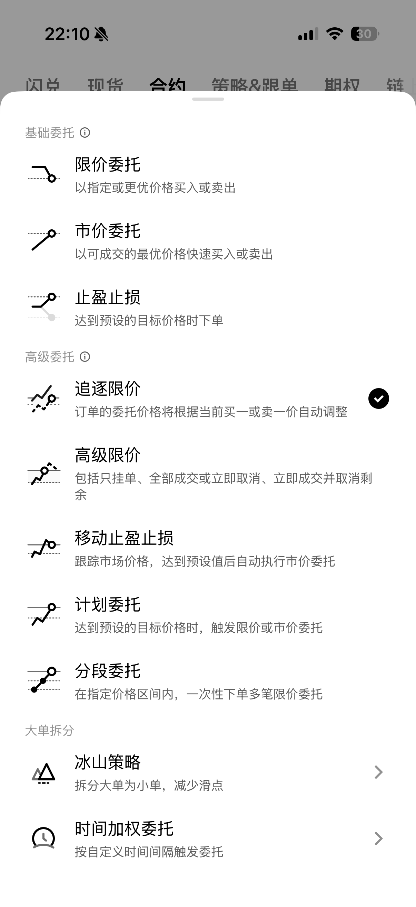
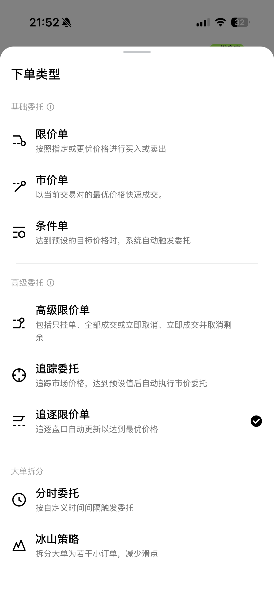
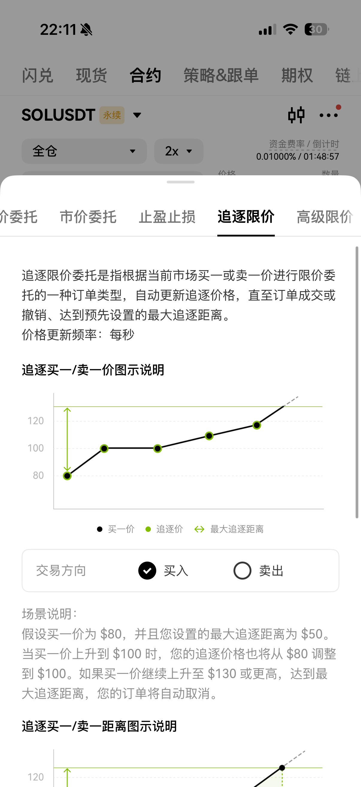
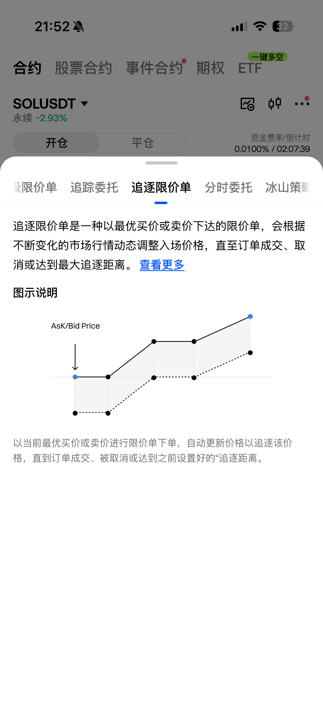
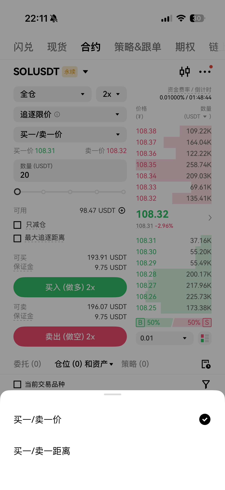
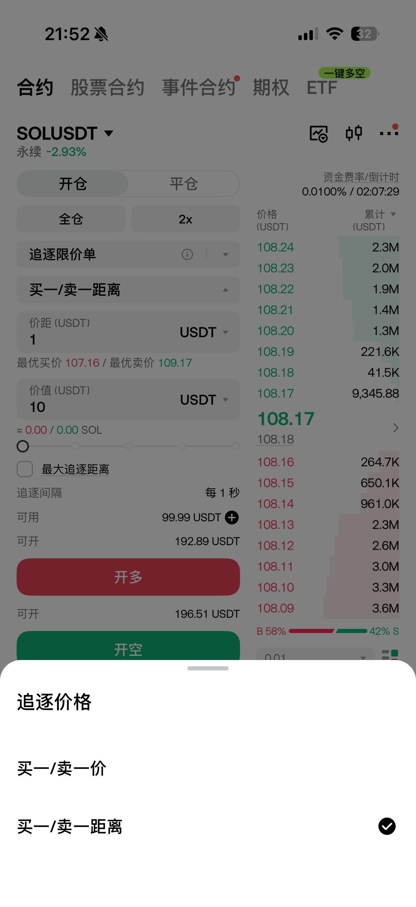
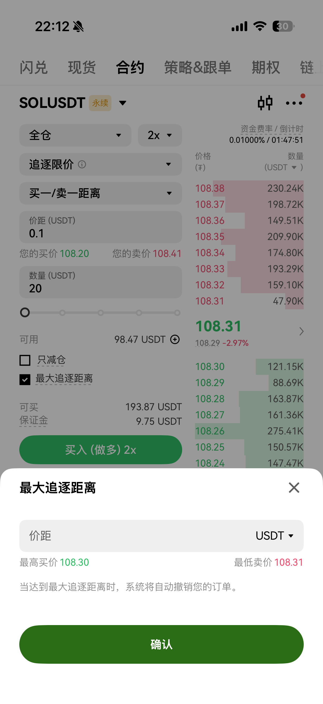
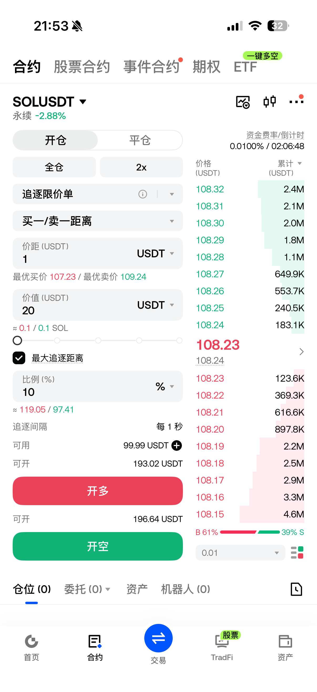
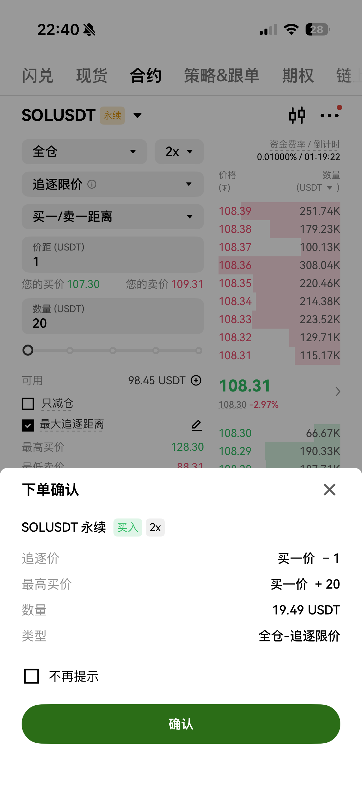
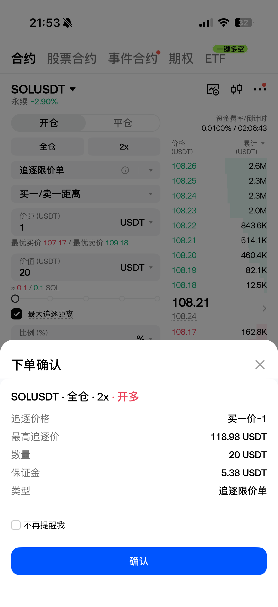
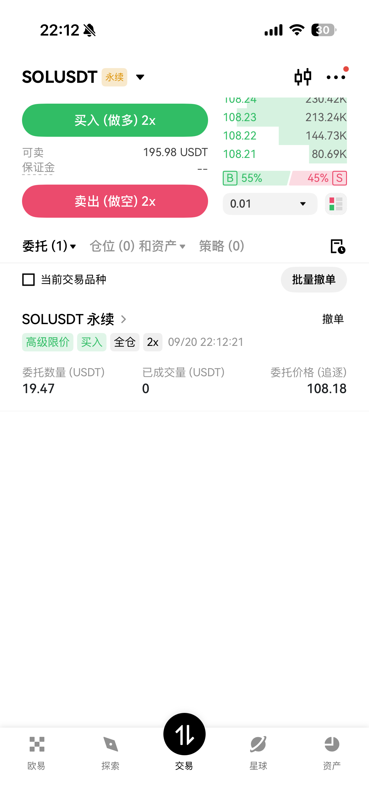
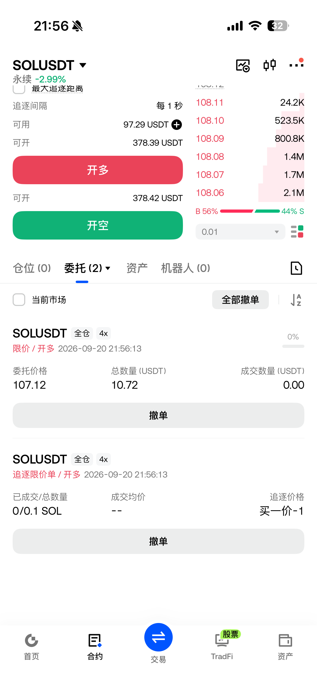
本次实操未截到部分成交。Gate 官方教程界面展示 8/100 张，文字说明剩余会继续追价；OKX 官方教程样本已成交为 0，无法证明其部分成交界面。
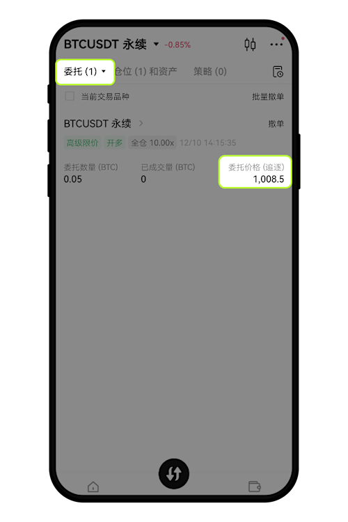
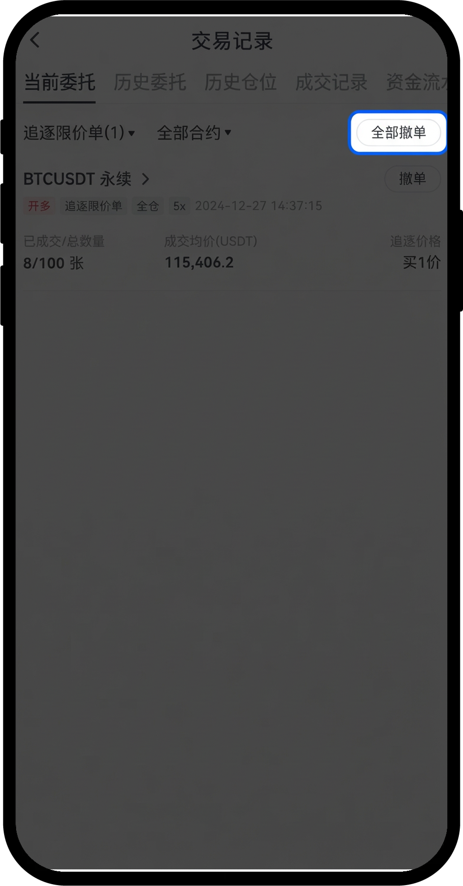
这次实操没截到撤单当时。下面用官方教程的当前委托。
两边都没有碰到停止线之后的结果页。OKX 官方教程给了停止线怎么设。
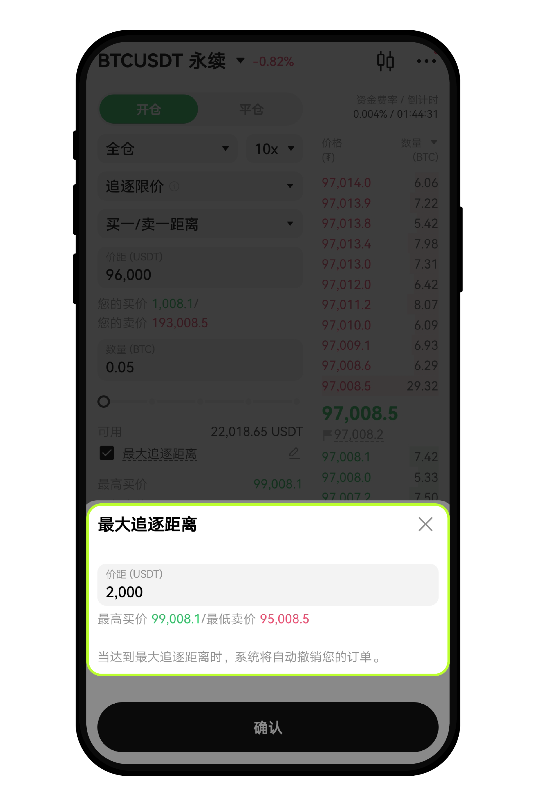
Gate 本次历史截图可见成交数量与均价，但「已终止」没有说明是手动撤单还是触线。OKX 历史页未取证。
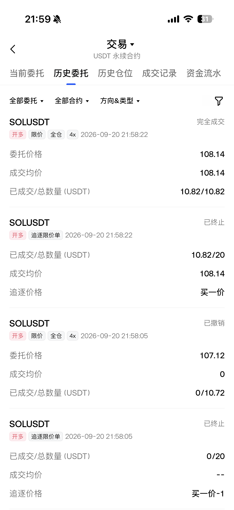
| 阶段 | OKX | Gate |
|---|---|---|
| 机制 | 持续自动追逐 | 持续自动追逐 |
| 发现 | 高级组第一项 + 一句话 | 高级组 + 一句话；旁边有追踪委托 |
| 设置 | 可跟一价或价差；弹层换算高低价 | 同样可跟一价或价差；距离可切 % |
| 确认 | 「买一价 - 1」；最高买价写成「买一价 + 20」 | 「买一价-1」；最高追逐价是具体数字 |
| 运行 | 显示成高级限价，价格旁标「追逐」 | 父追逐 + 子限价两行 |
| 部分成交 | 官方截图已成交为 0；部分成交界面未验证 | 旧版教程截图 8/100 张；官方文字确认剩余继续追价 |
| 撤单 | 官方：单笔 / 批量 | 官方：单笔 / 全部撤单 |
| 触线 | 官方：弹层换成最高买价 / 最低卖价 | 未见结果页 |
| 复盘 | 未见历史页 | 本次样本显示均价与成交量；未见具体终止原因 |
入口解释、价距图示清楚。确认页用公式：买一价 - 1、买一价 + 20。运行中改叫高级限价，入口和列表对不上。
确认页「买一价-1」，停止线直接写成价格。列表父子拆开；本次两个结束样本都写「已终止」，无法从状态区分手撤与触线。
取证范围：发现、设置、确认、运行中和 Gate 历史使用 2026.09.20 实操截图；部分成交、撤单和停止线设置补自官方教程截图，Gate 部分成交样本是 2024 年界面。规则复核见 OKX 官方说明、Gate 官方教程。未见界面均按「未验证」处理。